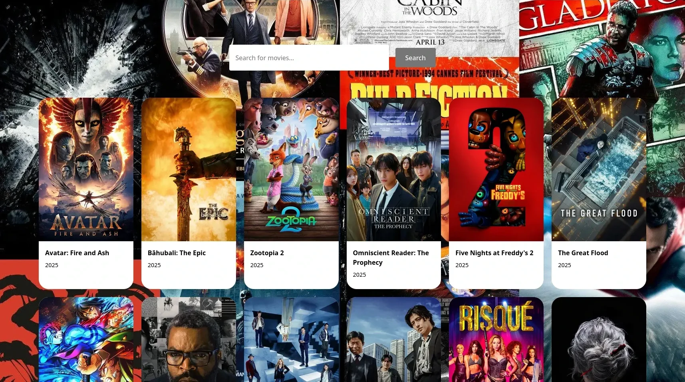
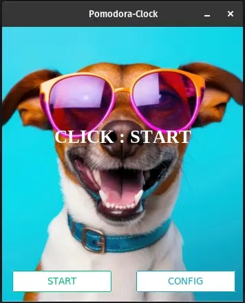

PROJECTS
Movie Time

A user-friendly website designed to help you explore, discover, and search for a wide variety of movies, while also allowing you to save and manage a personalized list of your favorite films for easy access later.
QUIZ ME
A command-line quiz game that tracks your score in real-time and saves your performance history to a file. You can view past attempts and stats like your high score.
Run On Anything

A Python library that lets you run your Python project on any machine with Python installed.
Pomodora Clock

A pomodora clock built in python. The clock is customizable to the users specifications.